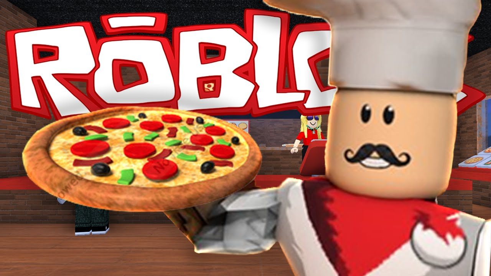

Work at a Pizza Place è il quarto gioco su Roblox a raggiungere 1 miliardo di visite, dopo MeepCity , Jailbreak e Murder Mystery 2 . L'obiettivo del gioco è lavorare nella pizzeria dove ci sono una varietà di lavori per ottenere monete dagli stipendi . I giocatori possono utilizzare le monete per migliorare la propria casa e acquistare oggetti. Ci sono sei lavori che i giocatori possono scegliere: Cassiere , Cuoco , Pizzaiolo , Consegna , Fornitore e Manager . C'è anche un altro edificio chiamato The Dump dove puoi vendere e acquistare articoli scontati.

Torna alla Home